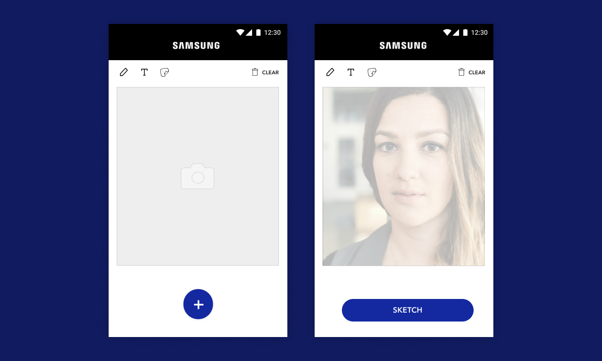

Interactive installation – UX, UI
Samsung brand activation
The brief
After spotting our smart drawing device, Samsung’s agency approached us to create an interactive installation to launch the new Galaxy Note9. They wanted us to show the evolution of the S Pen, the signature feature of the Note series, and help people to get creative.
I designed a mini-app which included features created specifically to show off the Galaxy Note9’s tech – the Intelligent Camera & S Pen.
I designed a mini-app which included features created specifically to show off the Galaxy Note9’s tech – the Intelligent Camera & S Pen.
The solution
This was the first time that our robotic whiteboard was part of a brand installation at this scale. Our own app was still a work in progress and the physical product was being manufactured, so we only had prototype units to work with. This meant that I had to work very closely with engineers to find workarounds for any technical constraints.

The challenge for the interaction was around how to motivate people to get creative on the spot – as we all know drawing can sometimes be hard if we’re not used to it, and it’s tricky to get ideas when in front of a blank canvas. To put people at ease and get them started, we created a library of SVG stickers that could be dragged and dropped into the canvas and resized.
This is how the experience would work: visitors would take a selfie or photo at that exact moment, which (after their consent) was loaded automatically into the app and available for them to trace with the S Pen. They would then press send and see their drawing come to life, thanks to the drawing tech in front of them. From the same screen, they’d also be able to share their sketches on social media with comments about the experience.
The launch
The pop-up activation took place in a few shopping centres across the UK – Westfield Stratford in London, and the Bullring in Birmingham among others. Through this initiative we were able to help people get creative using the Galaxy Note9 to draw 5000+ sketches in under 4 weeks.

Role Creative & Design Lead
Responsibilities End-to-end design and project management, UX, UI visual design, prototyping & testing on-site
Launch date 2018
Responsibilities End-to-end design and project management, UX, UI visual design, prototyping & testing on-site
Launch date 2018